原156＋真实事件50，共206场，0拟合。原四带边权不变，沿用联合材料证据及软锚，只更改每个待判对象的种子排除范围；只仲裁COMPACT新增扣量。六个继承固定检查加大庆/阳泉两个几乎不变的夏季定位场。每场各法同RAW色限、同原支持。
结果与局限 · 冻结机制 · 必要指标 · 固定位置与极值结果
原156＋事件50共206场。1926个有地图当前对象中63个材料倾向变化超过0.01；原30均值几乎不变。淄博冬季固定点新增扣量增加0.0124，最大建筑覆盖亮点增加0.1294；大庆/阳泉固定夏点不变。地图交格仍有至多0.00435额外削减，不替换默认方案。
旧GRAPH剩余新增扣量 0.828 → 对象自身留出 0.830 μg/m³；实际PM变化 -0.002。
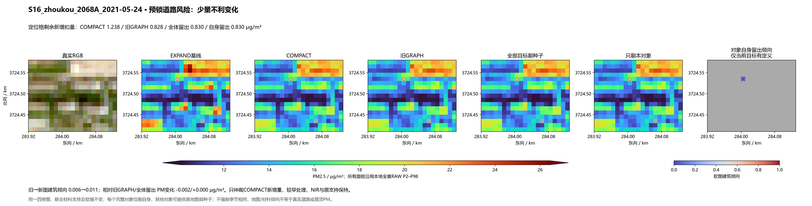
旧GRAPH剩余新增扣量 0.137 → 对象自身留出 0.122 μg/m³；实际PM变化 +0.015。
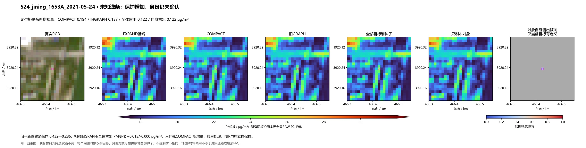
旧GRAPH剩余新增扣量 1.505 → 对象自身留出 1.505 μg/m³；实际PM变化 +0.000。
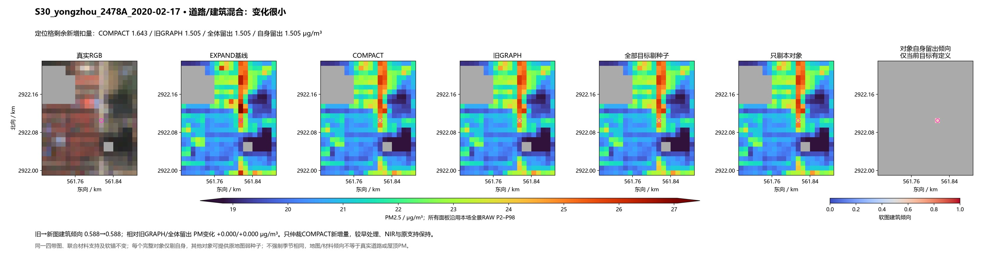
旧GRAPH剩余新增扣量 0.674 → 对象自身留出 0.689 μg/m³；实际PM变化 -0.015。
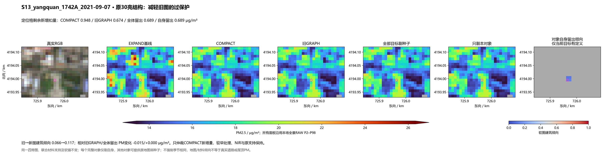
旧GRAPH剩余新增扣量 0.612 → 对象自身留出 0.612 μg/m³；实际PM变化 +0.000。
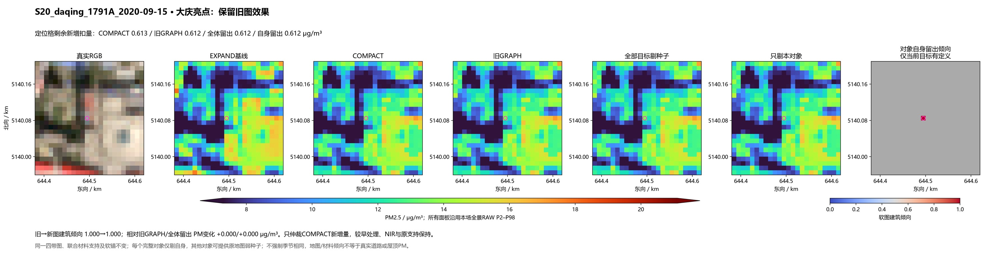
旧GRAPH剩余新增扣量 0.245 → 对象自身留出 0.257 μg/m³；实际PM变化 -0.012。
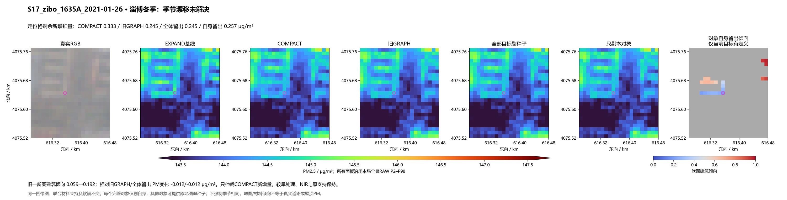
旧GRAPH剩余新增扣量 0.422 → 对象自身留出 0.422 μg/m³；实际PM变化 -0.000。
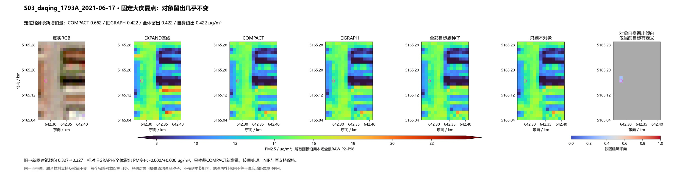
旧GRAPH剩余新增扣量 0.348 → 对象自身留出 0.348 μg/m³；实际PM变化 -0.000。
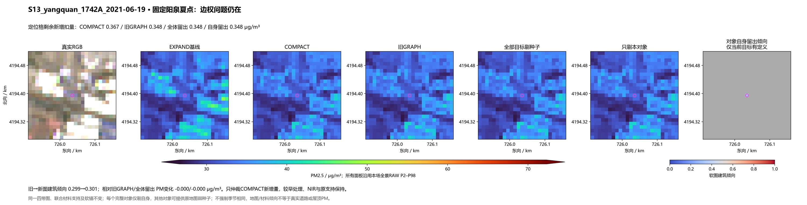
全部目标留出→仅自身留出，新增扣量 0.353917→0.483295 μg/m³，实际PM变化 -0.129378。事后极值检查，不参与机制。
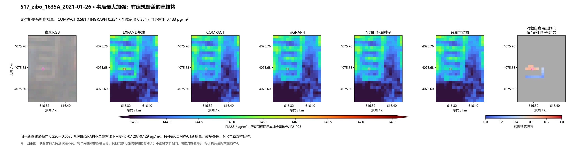
全部目标留出→仅自身留出，新增扣量 0.654615→0.650128 μg/m³，实际PM变化 +0.004487。事后极值检查，不参与机制。
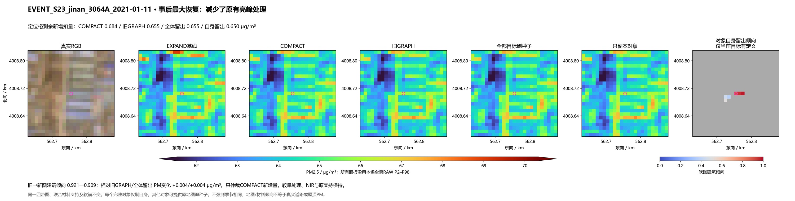
全部目标留出→仅自身留出，新增扣量 0.338884→0.343236 μg/m³，实际PM变化 -0.004352。事后极值检查，不参与机制。
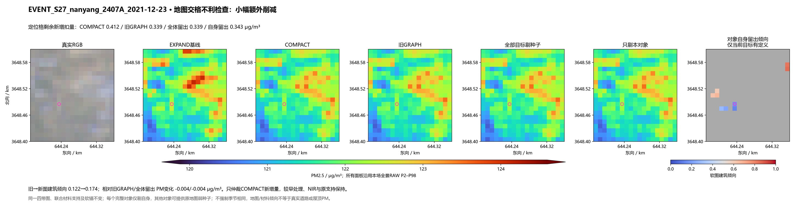